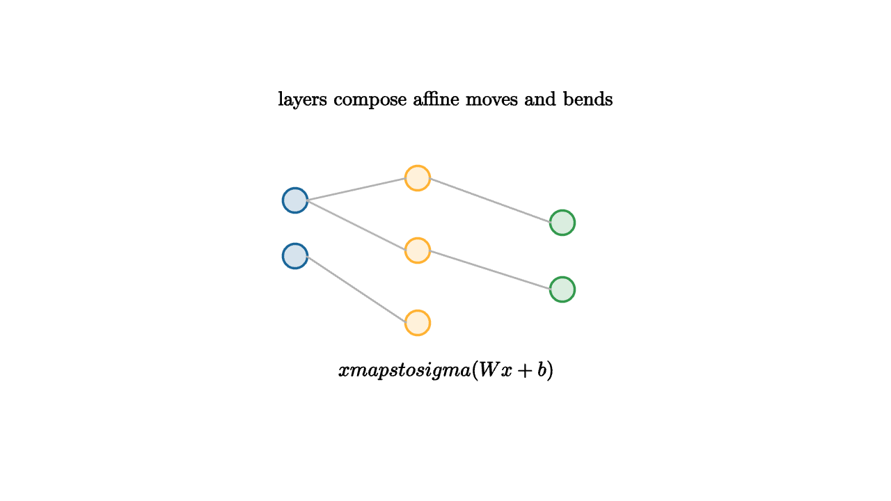

A neural network can look mysterious because it contains many weights. The geometric story is simpler. Each layer performs an affine transformation, then applies a nonlinearity. The affine part moves, rotates, scales, and shears the current representation. The nonlinearity bends the space. Composing many such bends gives the network flexible geometry.
For one hidden layer,
The matrix $W$ creates linear measurements of the input. The bias $b$ shifts thresholds. The activation $\sigma$ changes those measurements nonlinearly. ReLU, for example, keeps positive values and clips negative values to zero:

source
let soft = |col, amount| lerp(WHITE, col, amount)
mesh network = [
center{1.35u} Text("layers compose affine moves and bends", 0.64),
center{1.35l + 0.45u} fill{soft(BLUE, 0.18)} stroke{BLUE, 2} Circle(0.11),
center{1.35l + 0.05d} fill{soft(BLUE, 0.18)} stroke{BLUE, 2} Circle(0.11),
center{0.25l + 0.65u} fill{soft(ORANGE, 0.18)} stroke{ORANGE, 2} Circle(0.11),
center{0.25l} fill{soft(ORANGE, 0.18)} stroke{ORANGE, 2} Circle(0.11),
center{0.25l + 0.65d} fill{soft(ORANGE, 0.18)} stroke{ORANGE, 2} Circle(0.11),
center{1.05r + 0.25u} fill{soft(GREEN, 0.18)} stroke{GREEN, 2} Circle(0.11),
center{1.05r + 0.35d} fill{soft(GREEN, 0.18)} stroke{GREEN, 2} Circle(0.11),
stroke{LIGHT_GRAY, 1.6} Line(1.25l + 0.45u, 0.35l + 0.65u),
stroke{LIGHT_GRAY, 1.6} Line(1.25l + 0.45u, 0.35l),
stroke{LIGHT_GRAY, 1.6} Line(1.25l + 0.05d, 0.35l + 0.65d),
stroke{LIGHT_GRAY, 1.6} Line(0.15l + 0.65u, 0.95r + 0.25u),
stroke{LIGHT_GRAY, 1.6} Line(0.15l, 0.95r + 0.35d),
center{1.08d} Tex("x \\mapsto \\sigma(Wx+b)", 0.66)
]Piecewise linear networks are especially visual. A ReLU network divides input space into regions. Inside each region, the network behaves like a linear function. Across a boundary where a ReLU turns on or off, the linear rule changes. Many ReLUs create many regions, so a deep network can build a complicated function from simple flat pieces.
source
let soft = |col, amount| lerp(WHITE, col, amount)
"Linear Start"
mesh scene = [
center{1.3u} Text("a linear layer moves the whole space", 0.62),
stroke{LIGHT_GRAY, 1} LineGrid([-2, 2, 8], [-1, 1, 4], 1),
stroke{BLUE, 3} Line(1.4l + 0.65d, 1.4r + 0.65u)
]
play Write(0.8)
"Activation"
scene = [
center{1.3u} Text("an activation creates a bend", 0.64),
stroke{ORANGE, 3} Polyline([1.5l + 0.65d, 0.15l + 0.65d, 1.45r + 0.65u]),
center{1.05d} Tex("\\max(0,t)", 0.72)
]
play Trans(0.9)
"Composition"
scene = [
center{1.3u} Text("many bends create a flexible map", 0.62),
stroke{GREEN, 3} Polyline([1.6l + 0.55d, 1.1l + 0.25d, 0.55l + 0.4u, 0.05r + 0.1d, 0.65r + 0.55u, 1.45r + 0.2u]),
center{1.05d} Text("deep means composed transformations", 0.62)
]
play Trans(0.8)The representation viewpoint is the heart of modern neural networks. Early layers may turn pixels into edges, local textures, or simple shapes. Later layers combine those into parts and object-level features. In language, early layers may encode local token patterns, while later layers track syntax, roles, and longer context. The exact interpretation depends on the model, but the geometric theme remains: the network changes coordinates until the task becomes easier.
Backpropagation computes how each bend should change. It applies the chain rule through the composition of layers. If the output loss changes when a hidden feature changes, and that hidden feature changes when a weight changes, backpropagation multiplies those sensitivities along the computational graph.
The power of neural networks comes from learned representations. The risk comes from flexibility. A network can learn shortcuts, amplify spurious correlations, and become hard to inspect. Good practice uses validation, regularization, data checks, and visualization of learned behavior.
The best first picture of a neural network is a sequence of maps. The input space is folded, stretched, clipped, and unfolded into a representation where the final prediction can be simple. The weights are the machinery of that geometry.